تقرير المرحلة L3b: سجل المخططات والتوصيات مركزيا وجهويا، والتوجيهات والردود والإشعارات الفورية بين المركزي والجهات
REG-2026-0027، مرجع رسمي، نوع (مخطط، قرار، مذكرة، منشور، تعليمة دائمة أو وقتية، توصية، محضر، أخرى)، مستوى مركزي أو جهوي بولايته، جهة مصدرة وموقّع، تواريخ الإصدار والنفاذ والانتهاء، مواضيع، ملخص ونص، الملف الأصلي وبصمته، ودرجة اطّلاع (الكل، الولاية، القيادة، مقيّد).DIR-2026-0042 عام (يتوسع إلى 24 ولاية) أو خاص بولايات، أو إشعار فوري NOT-2026-0019 من قاعة جهوية إلى المركزي؛ أولوية عادية أو عاجلة أو فورية، رد مطلوب بأجل أو للعلم، صلة اختيارية بحادث أو محور، حتى 10 مرفقات بـ 20 م.ب./register و /register/:id و /register/dispatches و /register/dispatches/:id، وتبويب «الوثائق» في المحور، وتبويب «المخططات والتوصيات» في لوحتي الوالي والوزير.السجل والبحث المتقدم بعدّاداته، الوضع النهاري ثم الليلي:
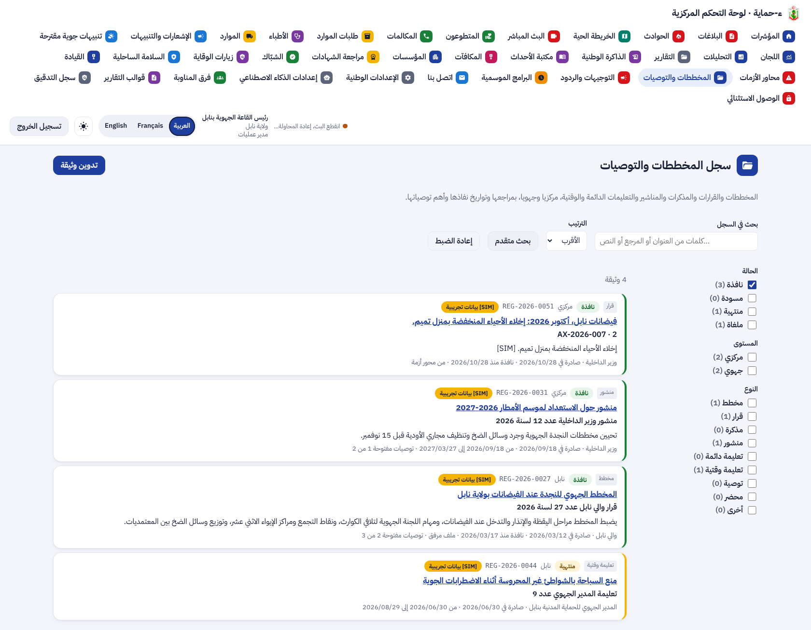
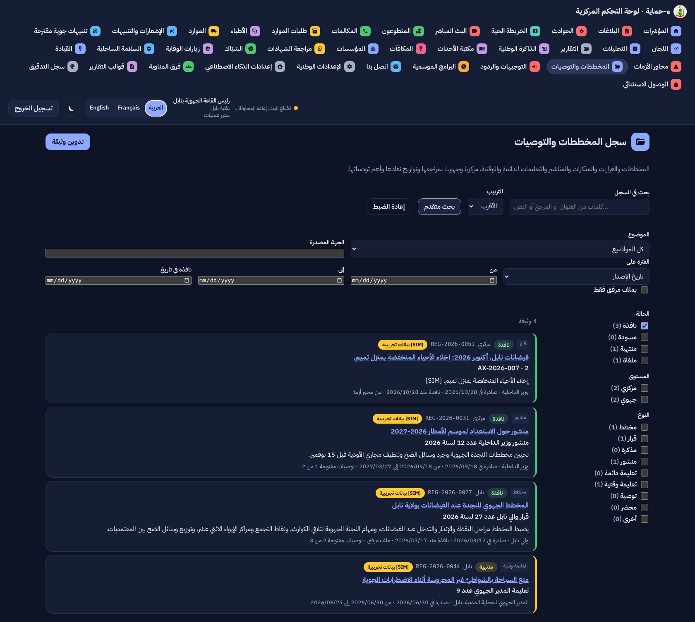
بطاقة المخطط الجهوي للنجدة عند الفيضانات بنابل: الملف وبصمته، أهم التوصيات بآجالها والمتأخر منها، الصلات بالوثائق، والمحور المرتبط:
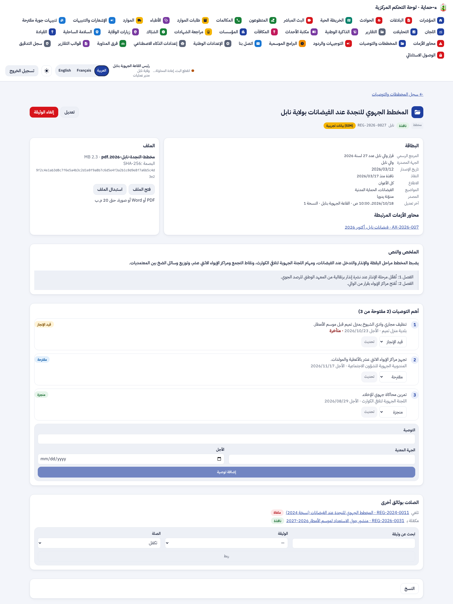
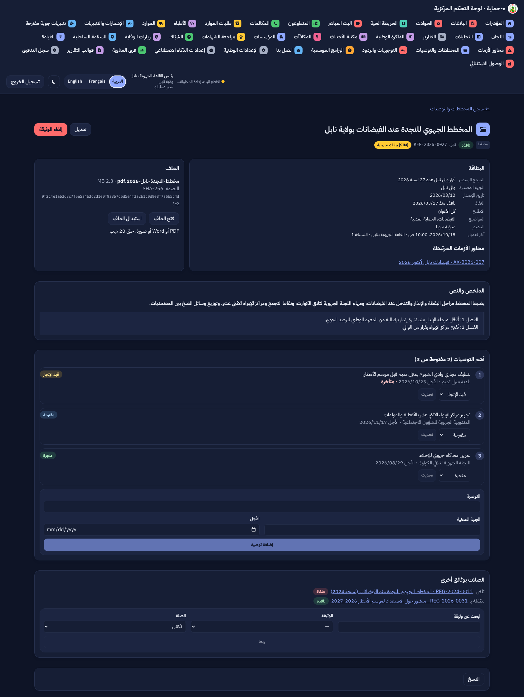
تدوين وثيقة جديدة:
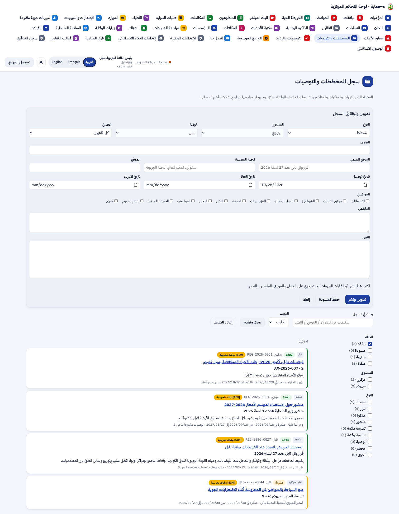
التوجيهات والردود عند القاعة المركزية، وتحرير توجيه خاص بولاية نابل:
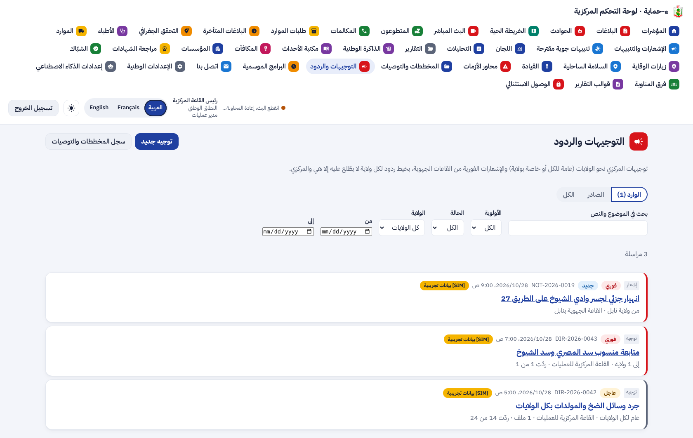
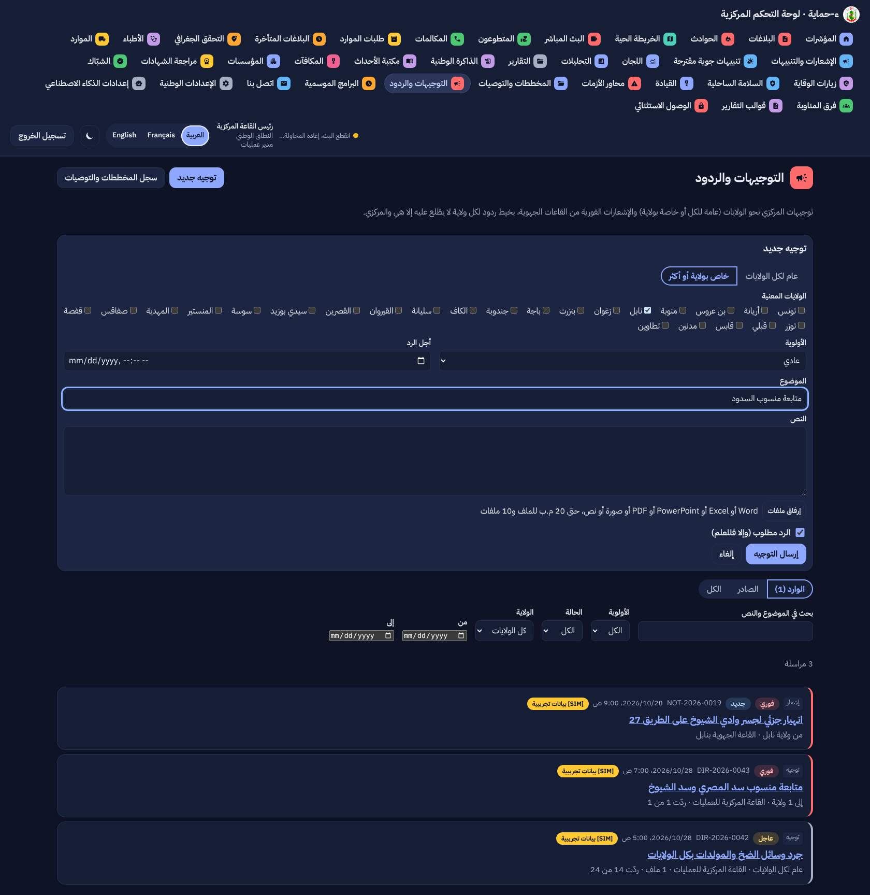
التوجيه العام نفسه: عند القاعة المركزية جدول المتابعة وخيط لكل ولاية؛ وعند ولاية نابل خيطها وحده:
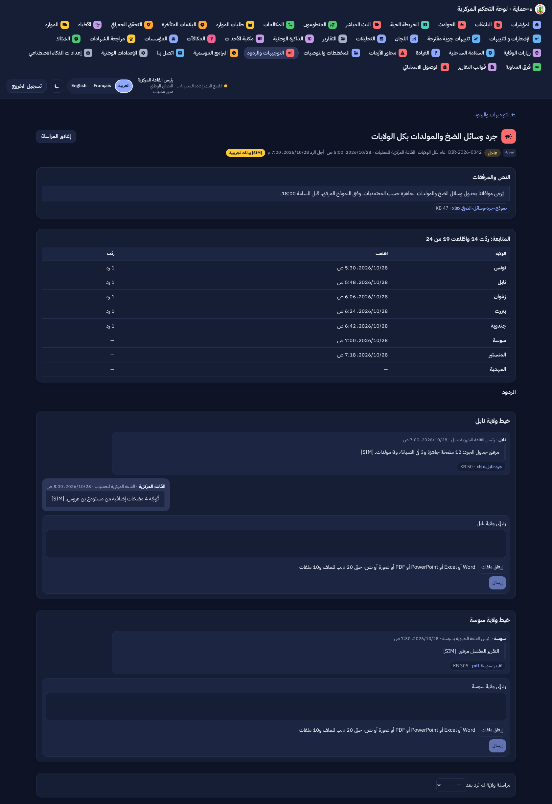
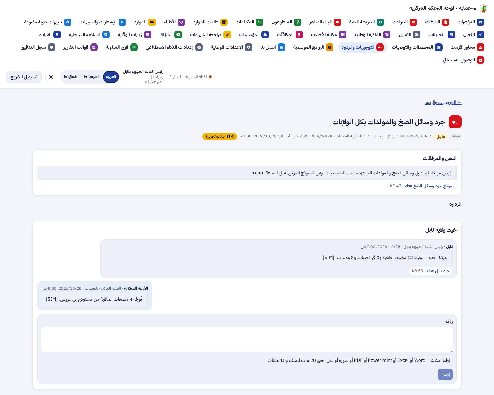
تبويب المخططات والتوصيات في لوحة الوالي، ووثائق المحور ومخططه:
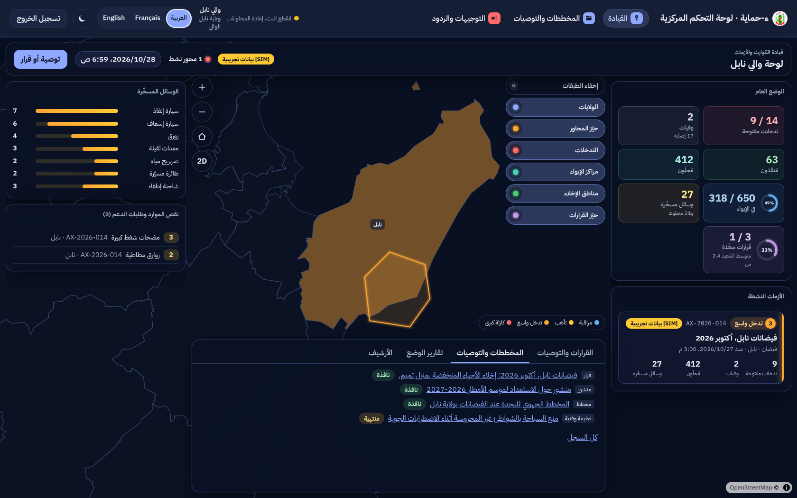
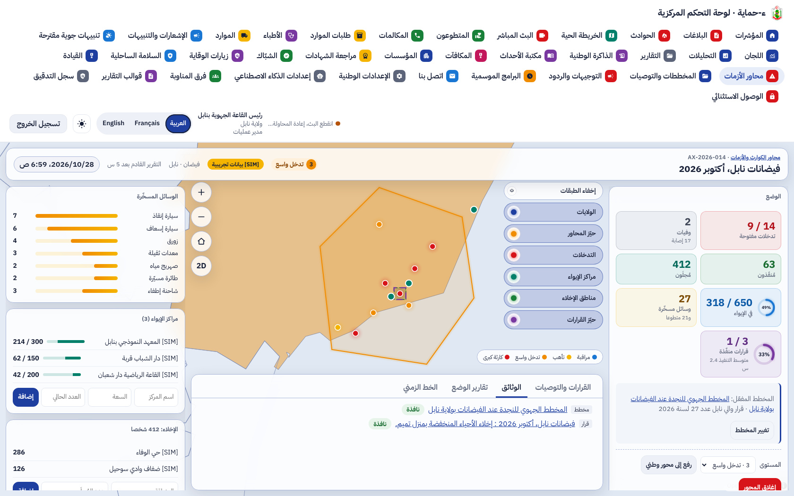
| البند | الحالة | التقدم |
|---|---|---|
| F-DSH-63 السجل والبحث المتقدم | منجز (L3b) | |
| F-DSH-64 بطاقة الوثيقة والتوصيات والصلات، ومخطط المحور | منجز (L3b) | |
| F-DSH-65 التوجيهات والردود والإشعارات | منجز (L3b) | |
| F-SRV-20 السجل: الترقيم والحالات والاطّلاع والبحث والملفات والنسخ | منجز (L3b) | |
| F-SRV-21 المراسلات: الخيوط الخاصة و RLS والمرفقات والمتابعة | منجز (L3b) | |
| استخراج نص الملفات للبحث | مؤجل (G1) | |
| معاينة ملفات Office داخل المنصة | مؤجل (G4) |
تقدم L3b: 100%. التالي: القائمة الرئيسية (UI-3)، ثم L4 و L5.
| المكوّن | العدد | النتيجة |
|---|---|---|
| الخلفية (pytest) | 942، منها test_register.py (13) | ناجحة (2 متخطّاة كالعادة؛ test_forecasts_need_weather فشل مرة في التشغيل الكامل ونجح وحده، وهو سابق لهذه المرحلة) |
| الترحيلات | صعودا ونزولا ثم صعودا حتى 0057 | ناجحة |
| لوحة القيادة (vitest) | 517، منها Register.test.tsx (12) | كلها ناجحة |
| لوحة القيادة (Playwright مع axe) | 56، منها /register و /register/:id و /register/dispatches و /register/dispatches/:id | كلها ناجحة |
ruff و mypy و eslint و tsc، و OpenAPI و ERD بـ --check | — | لا ملاحظة |
لا حزمة جديدة ولا خدمة ولا إعداد جديد. القائمة الكاملة في versions.md.
0057 · 1
register مع RLS لخيط كل ولايةalembic upgrade headمستودع الكائنات الموجود · 2
431 مسارا · 517 عملية · 2
/api/v1/staff/register: الوثائق، الملفات، التوصيات، الصلات، النسخ، المراسلات، الردود، المرفقات0.22.0 دون تغيير · 4
spec/: F-DSH-63 إلى 65 و F-SRV-20 و 21 منجزة، القاعدة BR-07c، 431 مسارا و517 عملية، الاختبارات، و L3b و UI-3 في خارطة الطريق، ومصطلحات السجل والتوجيه والإشعار الفوري.diagrams/: أصناف السجل والتوجيهات (25)، تسلسل «التوجيه العام وخيوط الردود الخاصة والإشعار الفوري» (59)، حالات الوثيقة والتوصية والمراسلة (60)، وحالات الاستعمال S38 إلى S43 و U16.presentation/: 35 مرحلة، الاختبارات، وخارطة الطريق.screens/l3b/.دمج #111 (L2)، ثم رفع L3 و L3b في طلب دمج جديد. بعدها القائمة الرئيسية الجديدة (UI-3): مجمّعة أو مسطّحة، أعلى الصفحة أو يمينها أو يسارها باختيار المستخدم، ثم L4 (نافذة أصحاب القرار والروزنامة) و L5.